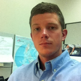

About Me

Hi! Thanks for visiting my personal web portfolio. To peek at my finished work or preview what is to come
please visit my personal gallery page or get in touch using the links above.
A little bit about me: Due to the nature of my parents' work as a UN civil servant and teacher, I was fortunate
to have grown up internationally, moving from country to country every few years. I particulary loved our
time spent living in the wonderful nation of Sri Lanka which was our home base through my most formative
years before moving to San Diego to attend
USD.
While an undergraduate student at
USD I pursued a liberal arts degree in 'Ethnic Studies' and 'History'.
Most recently, I discovered a passion for coding and web development which I continue to pursue as a student of
UCSD Extension School's Coding Bootcamp!
Hobbies/interests of mine include: playing soccer, surfing, gardening, CODING, and camping.